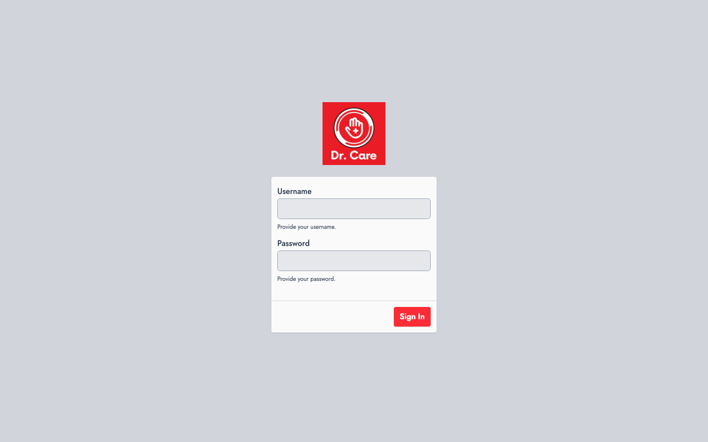

Navigate to your system URL to access the Dr Care admin panel. The login page is your entry point to all management features.
Step 1
Navigate to the /sign-in page in your browser.
Step 2
Enter your username (e.g., "admin") in the username field.
Step 3
Enter your secure password in the password field.
Step 4
Click the "Sign In" button to proceed to the dashboard.
Note
Default credentials are provided by your system administrator. Contact your admin if you need a password reset.
